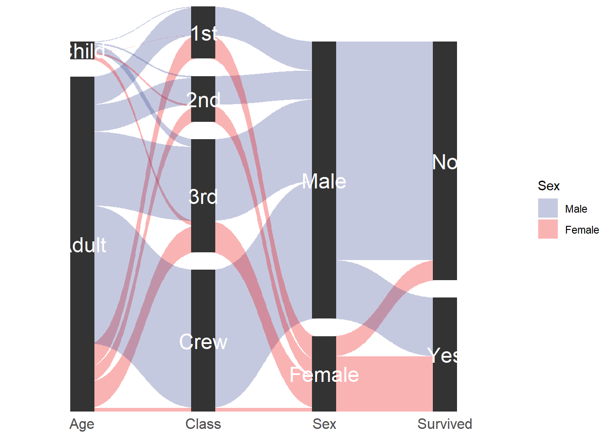

Chapter3 数据可视化
3.1 ggplot2绘图相关
3.1.1 ggplot2绘制桑基(冲击图)
library(ggforce)
titanic <- reshape2::melt(Titanic)
# This is how we usually envision data for parallel sets
#head(titanic)
# Reshape for putting the first 4 columns as axes in the plot
titanic <- gather_set_data(titanic, 1:4)
#head(titanic)
# Do the plotting
ggplot(titanic, aes(x, id = id, split = y, value = value)) +
geom_parallel_sets(aes(fill = Sex), alpha = 0.3, axis.width = 0.1) +
geom_parallel_sets_axes(axis.width = 0.2) +
geom_parallel_sets_labels(colour = 'white',angle = 0, size = 6) +
scale_y_continuous(expand = c(0,0)) +
scale_fill_aaas() +
theme_minimal() +
theme(axis.text.y = element_blank(),
axis.text.x = element_text(size = 12),
axis.title = element_blank(),
panel.background = element_blank(),
panel.grid = element_blank())
图3.1: ggplot2绘制桑基图示例